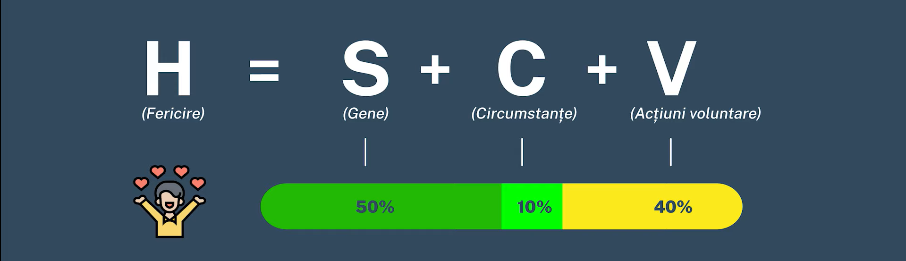
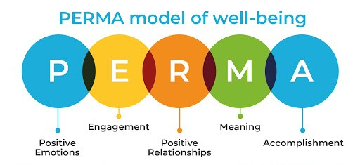

FERICIREA
Martin Seligman, un important cercetător în domeniul psihologiei pozitive şi autor al cărţii „Authentic Happiness”, afirmă că fericirea este compusă din trei elemente: plăcerea, integrarea şi semnificaţia. Mai exact, plăcerea se referă la sentimentele pozitive pe care le ai, integrarea - la capacitatea de a interacţiona conform dorinţelor tale cu cei din jurul tău, iar semnificaţia - puterea de a da acţiunilor tale, muncii de exemplu, un sens cât mai înalt.
Pe baza mai multor studii, psihologul Sonja Lyubomirsky a ajuns la concluzia că fericirea depinde în proporţie de 50% de genele noastre, 10% de circumstanţele vieţii, iar 40% de propriile noastre acţiuni. Astfel, continuă specialiştii, o modalitate bună de a deveni mai fericiţi este să cultivăm emoţii şi gânduri pozitive.
„Nu există nici fericire, nici nenorocire pe lume; există doar compararea unei stări cu cealaltă şi atâta tot. Doar cel care a simţit nefericirea cea mai cumplită e în stare să simtă cea mai mare fericire.” (Alexandre Dumas)
MODELUL PERMA
Modelul PERMA este propus de către Martin Seligman în cartea sa, Flourish, în care evidențiază importanța a mari 5 factori, care ne influențează nivelul de fericire sustenabilă de-al lungul vieții. Dacă ne concentrăm atenția asupra acestora și săvârșim acțiuni care să valorifice împlinirea lor, vom observa că nivelul de fericire va crește considerabil. E important să conștientizăm faptul că fericirea depinde de noi și nu de circumstanțele exterioare, iar astfel să construim comunități fericite care să realizeze lucruri mărețe cu pasiune și implicare.
